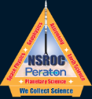
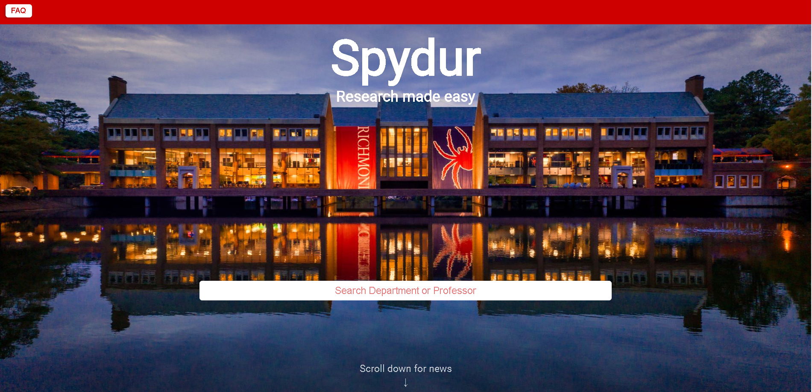
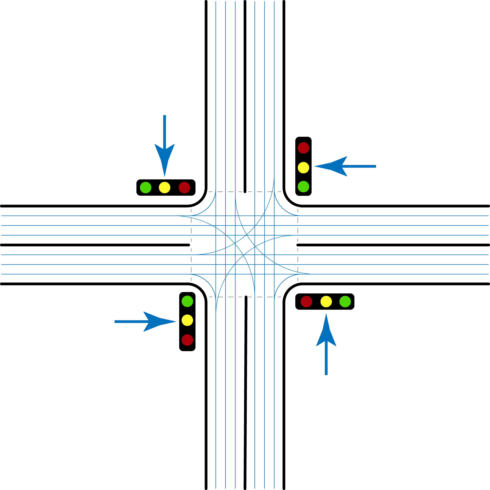
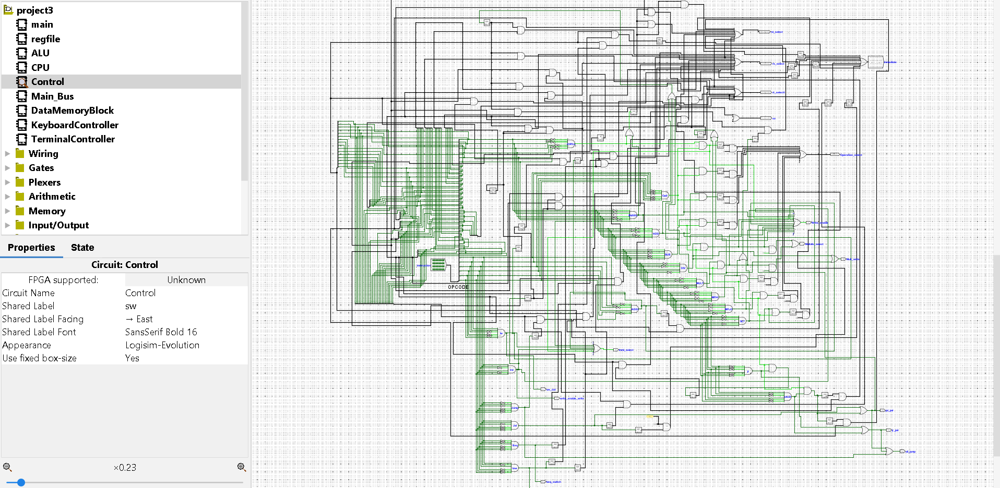
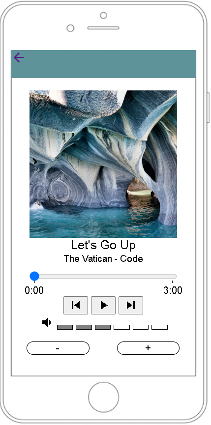
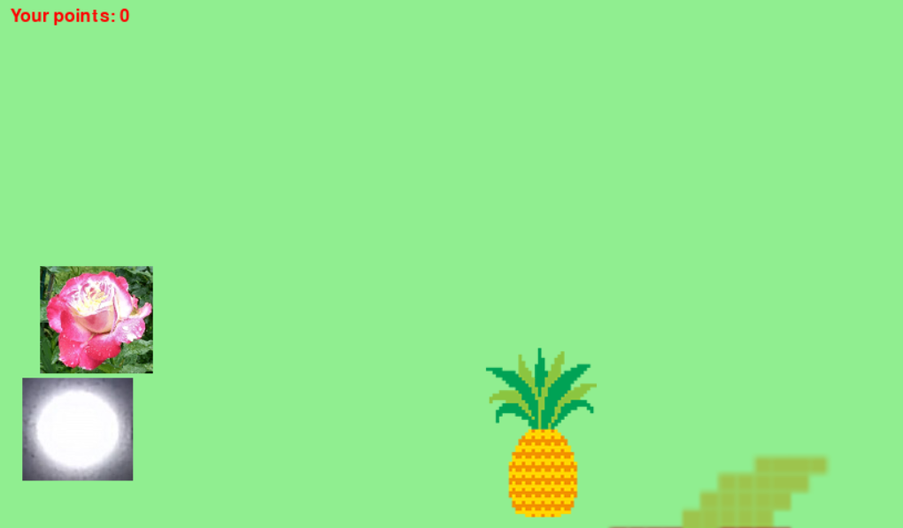
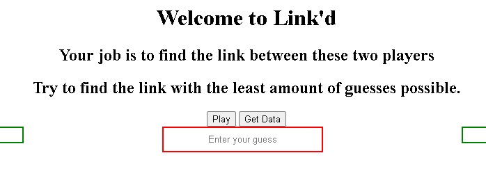

Aerospace · Operations
IT Dashboard for NSROC
An operations dashboard developed in support of NASA's Sounding Rocket Operations Contract — surfacing system health and mission-critical metrics for the IT team.
A selection of coursework, research, and personal projects spanning systems programming, machine learning, web development, and aerospace operations tooling.

An operations dashboard developed in support of NASA's Sounding Rocket Operations Contract — surfacing system health and mission-critical metrics for the IT team.
Machine learning model that predicts the top-10 finishers of a Formula 1 race using historical race, driver, and constructor data.
Kaggle-driven model targeting over/under totals on sports games — feature engineering, model selection, and back-testing on historical lines.

Group research project applying ML techniques to surface non-obvious trends in global video game sales data.

Summer research at the University of Richmond making the Spydur high-performance computing cluster more accessible and user-friendly for student researchers.

A C++ simulator that models the complexities of urban traffic and turn-decision logic at intersections.

A working central processing unit designed in Logism — exploring logic gates, control flow, and the procedures behind instruction execution.

A faithful recreation of the classic iPod interface built with HTML and CSS — pixel-level attention to the original click-wheel UX.

A small game designed around positive-reinforcement training mechanics — built as a teaching exercise in feedback loops.

A sports trivia game where players must link two athletes through their shared past teammates — graph-traversal at heart, sports knowledge in practice.